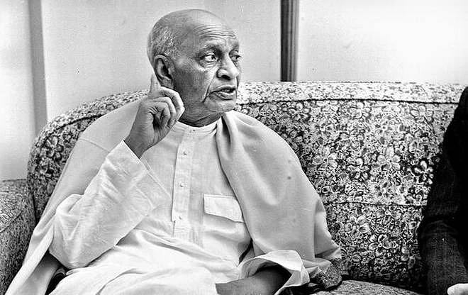
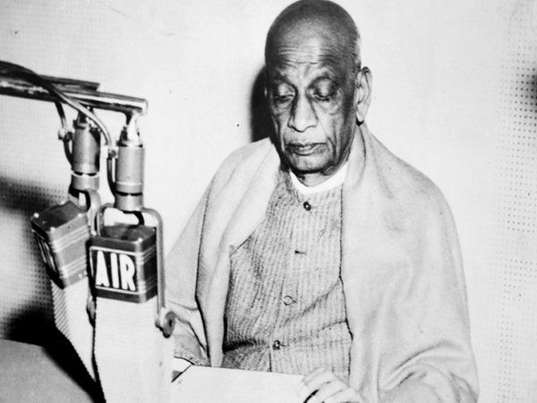

Iron Man of India
Vallabhbhai Jhaverbhai Patel born in 31 October 1875, endeared as Sardar, was an Indian statesman. He is also called the "Unifier of India. He served as the first Deputy Prime Minister of India from 1947 to 1950. He was a barrister and a senior leader of the Indian National Congress, who played a leading role in the country's struggle for independence, guiding its integration into a united, independent nation.
My only desire is that India should be a god producer and no one should be hungry, shedding tears for food in the country.
Early Life

Patel was born into a self-sufficient landowning family of the Leva Patidar caste. Reared in an atmosphere of traditional Hinduism, he attended primary school at Karamasad and high school at Petlad but was mainly self-taught. Patel married at the age of 16, matriculated at 22, and passed the district pleader's examination, which enabled him to practice law. In 1900 he set up an independent office of district pleader in Godhra, and two years later he moved to Borsad.
As a lawyer, Patel distinguished himself in presenting an unassailable case in a precise manner and in challenging police witnesses and British judges. In 1908 Patel lost his wife, who had borne him a son and daughter, and thereafter remained a widower. Determined to enhance his career in the legal profession, Patel traveled to London in August 1910 to study at the Middle Temple. There he studied diligently and passed the final examinations with high honours.
From 1917 to 1924 Patel served as the first Indian municipal commissioner of Ahmadabad and was its elected municipal president from 1924 to 1928. Patel first made his mark in 1918, when he planned mass campaigns of peasants, farmers, and landowners of Kaira, Gujarat, against the decision of the Bombay government to collect the full annual revenue taxes despite crop failures caused by heavy rains.
In 1928 Patel successfully led the landowners of Bardoli in their resistance against increased taxes. His efficient leadership of the Bardoli campaign earned him the title sardar (“leader”), and henceforth he was acknowledged as a nationalist leader throughout India. He was considered practical, decisive, and even ruthless, and the British recognized him as a dangerous enemy.
Fight For Independence
Satyagraha in Gujarat
Supported by Congress volunteers Narhari Parikh, Mohanlal Pandya, and Abbas Tyabji, Vallabhbhai Patel began a village-by-village tour in the Kheda district, documenting grievances and asking villagers for their support for a statewide revolt by refusing to pay taxes. Patel emphasised the potential hardships and the need for complete unity and non-violence in the face of provocation response from virtually every village.When the revolt was launched and tax revenue withheld, the government sent police and intimidation squads to seize property, including confiscating barn animals and whole farms. Patel organised a network of volunteers to work with individual villages, helping them hide valuables and protect themselves against raids. Thousands of activists and farmers were arrested, but Patel was not. The revolt evoked sympathy and admiration across India, including among pro-British Indian politicians. The government agreed to negotiate with Patel and decided to suspend the payment of taxes for a year, even scaling back the rate. Patel emerged as a hero to Gujaratis. In 1920 he was elected president of the newly formed Gujarat Pradesh Congress Committee; he would serve as its president until 1945.
Quit India Movement
On the outbreak of World War II, Patel supported Nehru's decision to withdraw the Congress from central and provincial legislatures, contrary to Gandhi's advice, as well as an initiative by senior leader Chakravarthi Rajagopalachari to offer Congress's full support to Britain if it promised Indian independence at the end of the war and installed a democratic government right away. Gandhi had refused to support Britain on the grounds of his moral opposition to war, while Subhash Chandra Bose was in militant opposition to the British. The British government rejected Rajagopalachari's initiative, and Patel embraced Gandhi's leadership again. He participated in Gandhi's call for individual disobedience, and was arrested in 1940 and imprisoned for nine months. He also opposed the proposals of the Cripps' mission in 1942. Patel lost more than twenty pounds during his period in jail.
Speech in Bombay
Patel made a climactic speech to more than 100,000 people gathered at Gowalia Tank in Bombay on 7 August:
The Governor of Burma boasts in London that they left Burma only after reducing everything to dust. So you promise the same thing to India? ... You refer in your radio broadcasts and newspapers to the government established in Burma by Japan as a puppet government? What sort of government do you have in Delhi now?...When France fell before the Nazi onslaught, in the midst of total war, Mr. Churchill offered union with England to the French. That was indeed a stroke of inspired statesmanship. But when it comes to India? Oh no! Constitutional changes in the midst of a war? Absolutely unthinkable ... The objective this time is to free India before the Japanese can come and be ready to fight them if they come. They will round up the leaders, round up all. Then it will be the duty of every Indian to put forth his utmost effort—within non-violence. No source is to be left untapped; no weapon untried. This is going to be the opportunity of a lifetime.
Role in Integrating India

As the first Home Minister, Patel played the key role in the integration of the princely states into the Indian federation. This achievement formed the cornerstone of Patel's popularity in the post-independence era. Even today he is remembered as the man who united India. He is, in this regard, compared to Otto von Bismarck who unified the many German states in 1871. Under the plan of 3 June, more than 565 princely states were given the option of joining either India or Pakistan, or choosing independence. Indian nationalists and large segments of the public feared that if these states did not accede, most of the people and territory would be fragmented. The Congress, as well as senior British officials, considered Patel the best man for the task of achieving conquest of the princely states by the Indian dominion. Gandhi had said to Patel, "The problem of the States is so difficult that you alone can solve it". Patel was considered a statesman of integrity with the practical acumen and resolve to accomplish a monumental task. He asked V. P. Menon, a senior civil servant with whom he had worked on the partition of India, to become his right-hand man as chief secretary of the States Ministry. On 6 August 1947, Patel began lobbying the princes, attempting to make them receptive towards dialogue with the future government and forestall potential conflicts. Patel used social meetings and unofficial surroundings to engage most of the monarchs, inviting them to lunch and tea at his home in Delhi. At these meetings, Patel explained that there was no inherent conflict between the Congress and the princely order. Patel invoked the patriotism of India's monarchs, asking them to join in the independence of their nation and act as responsible rulers who cared about the future of their people. He persuaded the princes of 565 states of the impossibility of independence from the Indian republic, especially in the presence of growing opposition from their subjects. He proposed favourable terms for the merger, including the creation of privy purses for the rulers' descendants. While encouraging the rulers to act out of patriotism, Patel did not rule out force. Stressing that the princes would need to accede to India in good faith, he set a deadline of 15 August 1947 for them to sign the instrument of accession document. All but three of the states willingly merged into the Indian union; only Jammu and Kashmir, Junagadh, and Hyderabad did not fall into his basket.
Patel insisted that if Hyderabad were allowed to continue as an independent nation enclave surrounded by India, the prestige of the government would fall, and then neither Hindus nor Muslims would feel secure in its realm. After defeating Nizam, Patel retained him as the ceremonial chief of state, and held talks with him. There were 562 princely states in India which Sardar Patel integrated.
Death

Patel's health declined rapidly through the summer of 1950. He later began coughing blood, whereupon Maniben began limiting his meetings and working hours and arranged for a personalised medical staff to begin attending to Patel. The Chief Minister of West Bengal and doctor Bidhan Roy heard Patel make jokes about his impending end, and in a private meeting Patel frankly admitted to his ministerial colleague N. V. Gadgil that he was not going to live much longer. Patel's health worsened after 2 November, when he began losing consciousness frequently and was confined to his bed. He was flown to Bombay on 12 December on advice from Dr Roy, to recuperate as his condition was deemed critical. Nehru, Rajagopalachari, Rajendra Prasad, and Menon all came to see him off at the airport in Delhi. Patel was extremely weak and had to be carried onto the aircraft in a chair. In Bombay, large crowds gathered at Santacruz Airport to greet him. To spare him from this stress, the aircraft landed at Juhu Aerodrome, where Chief Minister B. G. Kher and Morarji Desai were present to receive him with a car belonging to the Governor of Bombay that took Vallabhbhai to Birla House.
After suffering a massive heart attack (his second), Patel died on 15 December 1950 at Birla House in Bombay. In an unprecedented and unrepeated gesture, on the day after his death more than 1,500 officers of India's civil and police services congregated to mourn at Patel's residence in Delhi and pledged "complete loyalty and unremitting zeal" in India's service.
Statue of Unity
The Statue of Unity is the world's tallest statue, with a height of 182 metres (597 feet), located in the state of Gujarat, India. It depicts Indian statesman and independence activist Vallabhbhai Patel (1875-1950), who was the first deputy prime minister and home minister of independent India and an adherent of Mahatma Gandhi. Patel was highly respected for his leadership in uniting 562 princely states of India to form the single Union of India. In Gujarat the statue is found on the Narmada River in the Kevadiya colony, facing the Sardar Sarovar Dam 100 kilometres (62 mi) southeast of the city of Vadodara.
The project was first announced in 2010, and construction of the statue started in October 2013 by Indian company Larsen & Toubro, with a total construction cost of ₹2,700 crore (US$422 million). It was designed by Indian sculptor Ram V. Sutar and was inaugurated by the Prime Minister of India, Narendra Modi on 31 October 2018, the 143rd anniversary of Patel's birth.
Features of the Statue
The Statue of Unity is the world's tallest statue at 182 metres (597 ft). It rises 54 metres (177 ft) higher than the previous record holder, the Spring Temple Buddha in China's Henan province. The previous tallest statue in India was the 41 m (135 ft) tall statue of Lord Hanuman at the Paritala Anjaneya Temple near Vijayawada in the state of Andhra Pradesh. The statue can be seen within a 7 km (4.3 mi) radius.
The monument is constructed on a river island named Sadhu Bet, 3.2 km (2.0 mi) away from and facing the Narmada Dam downstream. The statue and its surroundings occupy more than 2 hectares (4.9 acres), and are surrounded by a 12 km (7.5 mi) long artificial lake formed by the Garudeshwar weir downstream on the Narmada river.
The statue is divided into five zones of which only three are accessible to the public. From its base to the level of Patel's shins is the first zone which has three levels and includes the exhibition area, mezzanine and roof. The first zone also contains a memorial garden and a museum. The second zone reaches up to Patel's thighs, while the third extends up to the viewing gallery at a height of 153 metres. The fourth zone is the maintenance area while the final zone comprises the head and shoulders of the statue.
The museum in the first zone catalogues the life of Sardar Patel and his contributions. An adjoining audio-visual gallery provides a 15-minute long presentation on Patel and also describes the tribal culture of the state. The concrete towers which form the statue's legs contain two elevators each. Each lift can carry 26 people at a time to the viewing gallery in just over 30 seconds. The gallery is located at a height of 153 metres (502 ft) and can hold up to 200 people.
Sardar Sarovar Dam

The Sardar Sarovar Dam is a concrete gravity dam built on the Narmada river in Navagam near the town of Kevadiya, Narmada District, in the state of Gujarat, India. The dam was constructed to provide water and electricity to four Indian states; Gujarat, Madhya Pradesh, Maharashtra, and Rajasthan.
The foundation stone of the project was laid out by Prime Minister Jawaharlal Nehru on 5 April 1961. The project took form in 1979 as part of a development scheme funded by the World Bank through their International Bank for Reconstruction and Development, to increase irrigation and produce hydroelectricity, using a loan of US$200 million. The construction for dam begun in 1987, but the project was stalled by the Supreme Court of India in 1995 in the backdrop of Narmada Bachao Andolan over concerns of displacement of people. In 2000-01 the project was revived but with a lower height of 111 metres under directions from SC, which was later increased in 2006 to 123 metres and 139 metres in 2017. The Sardar Sarovar Dam is 1210 meters long. The dam was inaugurated in 2017 by Prime Minister Narendra Modi. The water level in the Sardar Sarovar Dam eventually reached its highest capacity at 138.7 metres on 15 September 2019.